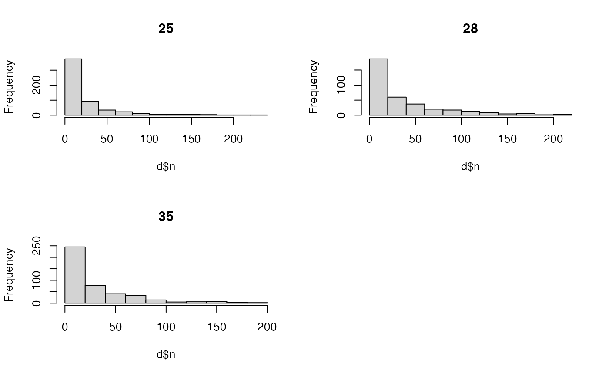
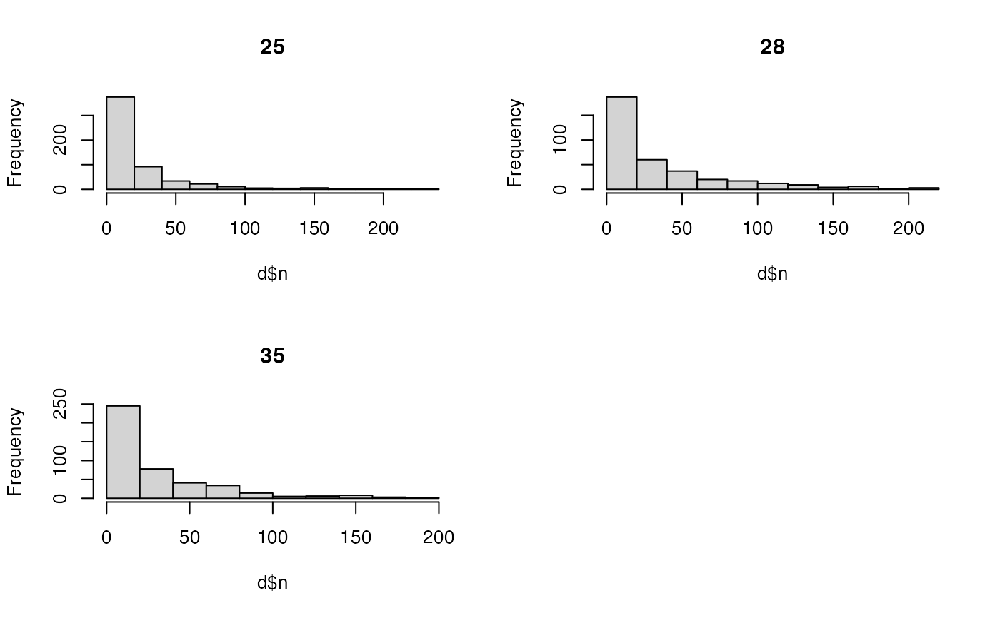

This function calculates centres of activity (COAs).
coa(
.acoustics,
.delta_t,
.split = NULL,
.lonlat = NULL,
.plot_weights = TRUE,
...,
.one_page = TRUE
)Arguments
- .acoustics
A
data.tableof acoustic detections. At a minimum, this must contain the following columns:receiver_id---a unique identifier of each receiver;timestamp---a time variable that defines the time stamp of detections;receiver_eastingandreceiver_northing(planar coordinates) orreceiver_lonandreceiver_lat(longitude/latitude coordinates)---receiver locations;
- .delta_t
The time interval over which to calculate COAs. This can be specified in any way understood by
cut.POSIXt()(see thebreaksargument).- .split
(optional) A
characterthat defines the name of the grouping factor in.acoustics(e.g.,individual_idfordat_acoustics).- .lonlat
(optional) A
logicalvariable that defines whether or not to calculate COAs using planar coordinates (receiver_eastingandreceiver_northingcolumns) or longitude/latitude coordinates (receiver_lonandreceiver_latcolumns). If unsupplied, this is defined automatically based on the columns in.acoustics.receiver_eastingandreceiver_northingare used preferentially, if available, unless.lonlatis specified..lonlat = TRUErequires thegeosphere::geomean()function.- .plot_weights
A
logicalvariable that defines whether or not to plot the frequency distribution of weights for each.splitvalue.- ...
Additional arguments passed to
graphics::hist().- .one_page
A
logicalvariable that defines whether or not to plot all histograms on one page.
Details
COAs are calculated as a weighted mean of the locations of receivers at which individuals are detected over consecutive time intervals, weighted by the frequency of detections at each of those receivers.
Examples
require(data.table)
require(dtplyr)
#> Loading required package: dtplyr
require(dplyr, warn.conflicts = FALSE)
#> Loading required package: dplyr
#### Prepare example data
# Define example acoustics data
acc <- dat_acoustics
index <- match(acc$receiver_id, dat_moorings$receiver_id)
# Add UTM receiver coordinates from `dat_moorings`
acc$receiver_easting <- dat_moorings$receiver_easting[index]
acc$receiver_northing <- dat_moorings$receiver_northing[index]
# Add lon/lat coordinates
acc$receiver_lon <- dat_moorings$receiver_lon[index]
acc$receiver_lat <- dat_moorings$receiver_lat[index]
#### Example (1): Calculate COAs for an example individual
pos <- which(acc$individual_id == acc$individual_id[1])
coa(acc[pos, ], .delta_t = "2 hours")
#> Warning: UTM coordinates used (both UTM and lon/lat coordinates detected).
 #> timestamp coa_x coa_y
#> 1: 2016-03-17 01:00:00 709206.3 6253082
#> 2: 2016-03-17 03:00:00 708989.5 6252974
#> 3: 2016-03-17 05:00:00 709340.0 6253137
#> 4: 2016-03-17 07:00:00 709434.0 6253166
#> 5: 2016-03-17 09:00:00 709447.2 6253170
#> ---
#> 758: 2017-05-31 21:00:00 702913.7 6266213
#> 759: 2017-05-31 23:00:00 702998.5 6266307
#> 760: 2017-06-01 01:00:00 703012.8 6266323
#> 761: 2017-06-01 03:00:00 703012.8 6266323
#> 762: 2017-06-01 05:00:00 703012.8 6266323
coa(acc[pos, ], .delta_t = "4 hours")
#> Warning: UTM coordinates used (both UTM and lon/lat coordinates detected).
#> timestamp coa_x coa_y
#> 1: 2016-03-17 01:00:00 709206.3 6253082
#> 2: 2016-03-17 03:00:00 708989.5 6252974
#> 3: 2016-03-17 05:00:00 709340.0 6253137
#> 4: 2016-03-17 07:00:00 709434.0 6253166
#> 5: 2016-03-17 09:00:00 709447.2 6253170
#> ---
#> 758: 2017-05-31 21:00:00 702913.7 6266213
#> 759: 2017-05-31 23:00:00 702998.5 6266307
#> 760: 2017-06-01 01:00:00 703012.8 6266323
#> 761: 2017-06-01 03:00:00 703012.8 6266323
#> 762: 2017-06-01 05:00:00 703012.8 6266323
coa(acc[pos, ], .delta_t = "4 hours")
#> Warning: UTM coordinates used (both UTM and lon/lat coordinates detected).
 #> timestamp coa_x coa_y
#> 1: 2016-03-17 01:00:00 709069.9 6253014
#> 2: 2016-03-17 05:00:00 709373.0 6253147
#> 3: 2016-03-17 09:00:00 709447.2 6253170
#> 4: 2016-03-21 21:00:00 709275.6 6253117
#> 5: 2016-03-22 05:00:00 709275.6 6253117
#> ---
#> 554: 2017-05-30 21:00:00 702813.2 6266056
#> 555: 2017-05-31 17:00:00 702967.8 6266273
#> 556: 2017-05-31 21:00:00 702938.2 6266241
#> 557: 2017-06-01 01:00:00 703012.8 6266323
#> 558: 2017-06-01 05:00:00 703012.8 6266323
#### Example (2): Calculate COAs for multiple individuals via .split
coa(acc, .delta_t = "6 hours", .split = "individual_id")
#> Warning: UTM coordinates used (both UTM and lon/lat coordinates detected).
#> timestamp coa_x coa_y
#> 1: 2016-03-17 01:00:00 709069.9 6253014
#> 2: 2016-03-17 05:00:00 709373.0 6253147
#> 3: 2016-03-17 09:00:00 709447.2 6253170
#> 4: 2016-03-21 21:00:00 709275.6 6253117
#> 5: 2016-03-22 05:00:00 709275.6 6253117
#> ---
#> 554: 2017-05-30 21:00:00 702813.2 6266056
#> 555: 2017-05-31 17:00:00 702967.8 6266273
#> 556: 2017-05-31 21:00:00 702938.2 6266241
#> 557: 2017-06-01 01:00:00 703012.8 6266323
#> 558: 2017-06-01 05:00:00 703012.8 6266323
#### Example (2): Calculate COAs for multiple individuals via .split
coa(acc, .delta_t = "6 hours", .split = "individual_id")
#> Warning: UTM coordinates used (both UTM and lon/lat coordinates detected).
 #> individual_id timestamp coa_x coa_y
#> 1: 25 2016-03-17 01:00:00 709145.3 6253048
#> 2: 25 2016-03-17 07:00:00 709436.5 6253166
#> 3: 25 2016-03-21 19:00:00 709275.6 6253117
#> 4: 25 2016-03-22 01:00:00 709275.6 6253117
#> 5: 25 2016-03-22 07:00:00 709275.6 6253117
#> ---
#> 1216: 35 2017-04-10 05:00:00 708308.2 6252858
#> 1217: 35 2017-04-10 17:00:00 708781.5 6253281
#> 1218: 35 2017-04-11 23:00:00 706968.8 6253886
#> 1219: 35 2017-04-12 17:00:00 708780.9 6253196
#> 1220: 35 2017-04-19 23:00:00 707195.3 6253739
#### Example (3): Use planar or lon/lat coordinates
coa(acc, .delta_t = "8 hours", .split = "individual_id", .lonlat = FALSE)
#> individual_id timestamp coa_x coa_y
#> 1: 25 2016-03-17 01:00:00 709183.2 6253064
#> 2: 25 2016-03-17 09:00:00 709447.2 6253170
#> 3: 25 2016-03-21 17:00:00 709275.6 6253117
#> 4: 25 2016-03-22 01:00:00 709275.6 6253117
#> 5: 25 2016-03-23 17:00:00 707542.3 6267727
#> ---
#> 1042: 35 2017-04-10 17:00:00 708781.5 6253281
#> 1043: 35 2017-04-11 17:00:00 706505.6 6254185
#> 1044: 35 2017-04-12 01:00:00 707195.3 6253739
#> 1045: 35 2017-04-12 17:00:00 708780.9 6253196
#> 1046: 35 2017-04-19 17:00:00 707195.3 6253739
coa(acc, .delta_t = "8 hours", .split = "individual_id", .lonlat = TRUE)

#> individual_id timestamp coa_x coa_y
#> 1: 25 2016-03-17 01:00:00 -5.612269 56.37585
#> 2: 25 2016-03-17 09:00:00 -5.607916 56.37668
#> 3: 25 2016-03-21 17:00:00 -5.610733 56.37628
#> 4: 25 2016-03-22 01:00:00 -5.610733 56.37628
#> 5: 25 2016-03-23 17:00:00 -5.627150 56.50808
#> ---
#> 1042: 35 2017-04-10 17:00:00 -5.618588 56.37798
#> 1043: 35 2017-04-11 17:00:00 -5.654667 56.38708
#> 1044: 35 2017-04-12 01:00:00 -5.643867 56.38278
#> 1045: 35 2017-04-12 17:00:00 -5.618665 56.37722
#> 1046: 35 2017-04-19 17:00:00 -5.643867 56.38278
#> individual_id timestamp coa_x coa_y
#> 1: 25 2016-03-17 01:00:00 709145.3 6253048
#> 2: 25 2016-03-17 07:00:00 709436.5 6253166
#> 3: 25 2016-03-21 19:00:00 709275.6 6253117
#> 4: 25 2016-03-22 01:00:00 709275.6 6253117
#> 5: 25 2016-03-22 07:00:00 709275.6 6253117
#> ---
#> 1216: 35 2017-04-10 05:00:00 708308.2 6252858
#> 1217: 35 2017-04-10 17:00:00 708781.5 6253281
#> 1218: 35 2017-04-11 23:00:00 706968.8 6253886
#> 1219: 35 2017-04-12 17:00:00 708780.9 6253196
#> 1220: 35 2017-04-19 23:00:00 707195.3 6253739
#### Example (3): Use planar or lon/lat coordinates
coa(acc, .delta_t = "8 hours", .split = "individual_id", .lonlat = FALSE)
#> individual_id timestamp coa_x coa_y
#> 1: 25 2016-03-17 01:00:00 709183.2 6253064
#> 2: 25 2016-03-17 09:00:00 709447.2 6253170
#> 3: 25 2016-03-21 17:00:00 709275.6 6253117
#> 4: 25 2016-03-22 01:00:00 709275.6 6253117
#> 5: 25 2016-03-23 17:00:00 707542.3 6267727
#> ---
#> 1042: 35 2017-04-10 17:00:00 708781.5 6253281
#> 1043: 35 2017-04-11 17:00:00 706505.6 6254185
#> 1044: 35 2017-04-12 01:00:00 707195.3 6253739
#> 1045: 35 2017-04-12 17:00:00 708780.9 6253196
#> 1046: 35 2017-04-19 17:00:00 707195.3 6253739
coa(acc, .delta_t = "8 hours", .split = "individual_id", .lonlat = TRUE)

#> individual_id timestamp coa_x coa_y
#> 1: 25 2016-03-17 01:00:00 -5.612269 56.37585
#> 2: 25 2016-03-17 09:00:00 -5.607916 56.37668
#> 3: 25 2016-03-21 17:00:00 -5.610733 56.37628
#> 4: 25 2016-03-22 01:00:00 -5.610733 56.37628
#> 5: 25 2016-03-23 17:00:00 -5.627150 56.50808
#> ---
#> 1042: 35 2017-04-10 17:00:00 -5.618588 56.37798
#> 1043: 35 2017-04-11 17:00:00 -5.654667 56.38708
#> 1044: 35 2017-04-12 01:00:00 -5.643867 56.38278
#> 1045: 35 2017-04-12 17:00:00 -5.618665 56.37722
#> 1046: 35 2017-04-19 17:00:00 -5.643867 56.38278